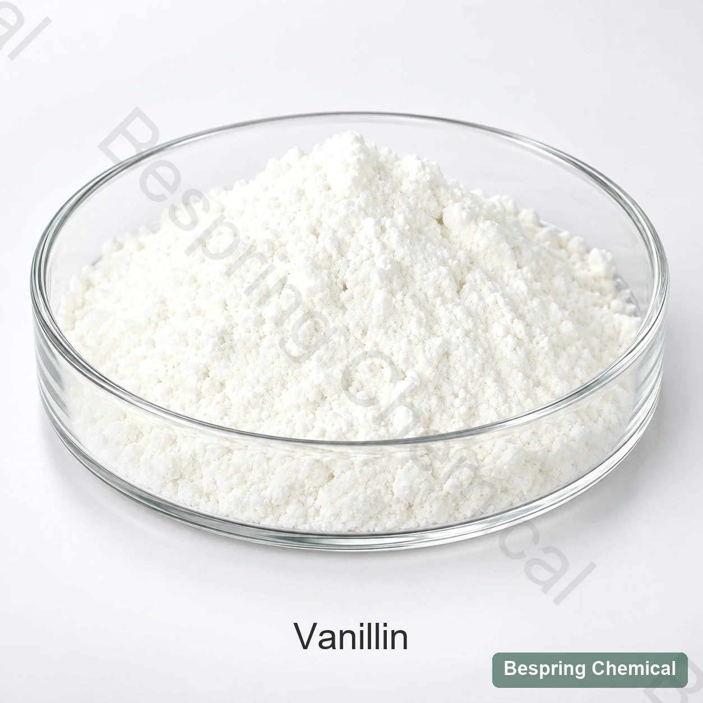
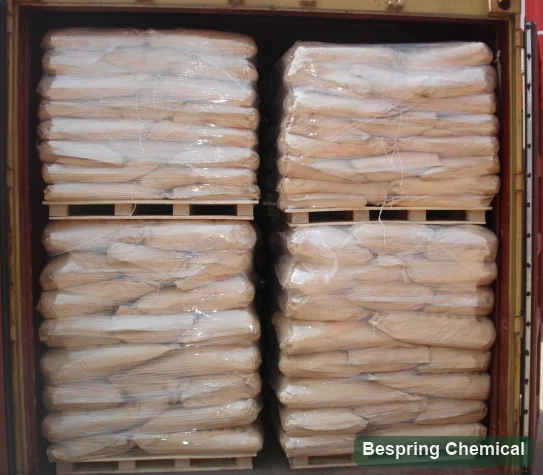

Vanillin
CAS 121-33-5. Approve its identity, route, purity and sensory fingerprint for the intended label and formula.
Vanilla-note flavoring substance · JECFA 889 / FEMA 3107
Vanillin is a defined flavoring substance that provides a sweet, creamy vanilla note in food formulations. Bespring reviews food grade vanillin sourcing for bakery, chocolate, confectionery, dairy and other qualified applications. Before ordering, confirm purity and test methods, production route, sensory benchmark and destination-market documentation.
For a comparable quotation, include your food standard, application, quantity, packaging and destination. Source-specific specifications and commercial terms are confirmed with the offered grade.

Defined molecule, variable commercial profile
Vanillin, also called vanillaldehyde or vanillic aldehyde, is 4-hydroxy-3-methoxybenzaldehyde (CAS 121-33-5), with formula C8H8O3 and molar mass 152.15 g/mol. The JECFA vanillin record describes white or slightly yellow needles or crystalline powder, slightly soluble in water and freely soluble in ethanol.
This page concerns the defined food flavoring substance, rather than vanilla extract or a carrier-based flavor blend. JECFA 889 and FEMA 3107 are flavoring reference numbers, not a food-additive INS/E designation. Chemical identity alone does not establish food-grade purity, a natural-source claim or performance in your recipe. Compare source documents, analytical results and sensory samples for the exact offered grade.
Prevent substitution and label errors
CAS 121-33-5. Approve its identity, route, purity and sensory fingerprint for the intended label and formula.
A separate flavoring substance with a different CAS, formula and intensity profile. It is not a stronger grade of the same identity.
A multi-component preparation from vanilla material, subject to distinct composition, standard-of-identity and labeling rules.
A chemistry name does not prove natural status. Obtain process, feedstock, traceability and destination-specific claim review.
A COA cannot replace smelling and tasting
Compare the sweet/creamy vanilla character and any smoky, phenolic, medicinal, woody or other notes against an approved reference. Set grade-appropriate acceptance criteria rather than treating every detectable difference as a defect.
Fix solvent, concentration, temperature, equilibration time, vessel and blind coding so source comparisons are repeatable.
Run multiple levels in the actual base. Track threshold, balance, aftertaste and interactions with cocoa, dairy fat, sweetener, salt and other aromas.
Monitor aroma retention, color, package interaction and off-note development after realistic heat, oxygen, light and storage exposure.
Process the flavor deliberately
Evaluate vanilla–cocoa balance, distribution and flavor retention through refining or conching. Judge perceived sweetness and bitterness in the finished recipe; vanillin is a flavoring substance, not a sugar replacement. Review chocolate ingredient selection and cocoa powder grade differences when matching the base.
Compare dough distribution, bake loss, crust/crumb aroma, color interaction and packaged shelf-life—not raw dough aroma alone.
Test fat/protein partitioning, pasteurization, aging, overrun, cold-temperature flavor release and aftertaste.
Because water solubility is limited, test the intended concentration, premix or permitted carrier, pH, clarity/sediment and reconstitution. If considering a food grade propylene glycol carrier, qualify its separate identity and legal use; the link is not a recommendation for every food.
Trial planning: Select trial levels for the target food, process and serving conditions, then assess the finished flavor against a control. No universal dose or replacement ratio is supplied here. In the United States, 21 CFR 182.60 lists vanillin for its intended flavoring use; 21 CFR 101.22 governs flavoring terminology and labeling. Neither certifies a Bespring batch or establishes a recipe.
Reference specifications and purchasing criteria
The values below are from the JECFA flavoring record (latest evaluation shown: 2019), not commercial limits for a Bespring offer or batch results. Request the current specification/TDS for the offered grade, agree methods and acceptance criteria, and review the delivered batch COA against that specification.
On small screens, scroll horizontally to read all three columns.
| Field | JECFA reference | Buyer control |
|---|---|---|
| Identity | IR identification; CAS 121-33-5 | Match current spectrum/method and declared source |
| Assay | Minimum 97% | Method, basis, chromatogram and batch result |
| Melting point | 81–84°C | Method and range; investigate depression or broadening |
| Appearance / odor | White or slightly yellow crystalline material; sweet, creamy vanilla odor | Numeric color where needed plus retained sensory standard |
| Solubility | Slightly soluble in water; freely soluble in ethanol | Validate permitted carrier and addition process |
| Source route | Not established by molecular identity | Feedstock, manufacturing process, traceability and claim statement |
| Commercial controls | Not JECFA identity fields | Moisture, residue, impurities, particle profile, microbiology as relevant, packing and shelf life |
The JECFA record states a minimum assay of 97%; this is a reference requirement, not the purity of an offered lot. Confirm whether the commercial assay is on an as-supplied or dried basis, and request the stated method. Moisture, loss on drying and residue on ignition are different tests. Specify individual contaminant limits where required; “heavy metals as Pb” does not replace a separate lead result or complete elemental testing.
A specification defines acceptance limits; a COA records results for an identified batch. Request the source-specific TDS, SDS, representative COA, production-route/origin statement and relevant allergen, GMO or certificate evidence. Verify any certificate against the exact grade, source, site and validity period. Availability is confirmed during qualification.
Public flavoring identity, assay, melting point, physical form and solubility reference; not evidence of a supplied batch.
Review JECFA 889CAS identity, flavoring technical effect and relevant US regulatory references.
Review the FDA recordDefinitions and conditions for natural flavoring terminology and source references.
Review Regulation 1334/2008Source-to-shelf approval
Confirm vanillin—not ethyl vanillin—plus feedstock, process, origin and intended label claim.
Compare IR/assay, chromatographic impurities, melting range, color, moisture and contaminants.
Use blind neat, standard-solution and application comparisons against a retained benchmark.
Lock carrier, dissolution, order of addition, temperature, hold time and aroma-loss controls.
Check oxidation, light, heat, odor transfer, color and flavor through intended shelf life.
Align COA, sensory retain, sampling, packaging, traceability and change notification.
Historical logistics reference

Buyer questions
No. Vanillin is one defined molecule. Vanilla extract is a multi-component preparation from vanilla material, with separate composition and labeling requirements. A vanillin assay cannot establish extract identity.
No. They are different chemical and flavoring identities. Ethyl vanillin is not a higher-purity grade of vanillin. Evaluate any substitution in the actual recipe rather than using a universal intensity or equal-weight ratio.
No. CAS identifies the molecule, not its feedstock or production process. Request route and traceability evidence, then assess the intended claim under destination-market rules. Natural vanillin and vanilla-derived flavoring are different claims.
No. The listed 97% minimum is an independent JECFA reference. The offered grade requires a current specification with its assay method and reporting basis; the batch COA must identify the actual lot and results.
Choose a permitted carrier, premix or direct addition method for the concentration and food matrix. Test dissolution, uniform distribution, heat exposure and finished aroma; slight water solubility does not mean immediate dissolution at every concentration.
State the food application, required standard, production-route or claim requirement, key limits and methods, sensory benchmark, quantity, packaging, destination country or port, Incoterm, delivery timing and requested documents.
Substantive review: 2026-10-04 · Official identity and labeling references are linked above.
Identity- and sensory-led sourcing
Share your application, required food standard and analytical or flavor benchmark. Our team can review sourcing fit, available documents and commercial requirements for the proposed grade.